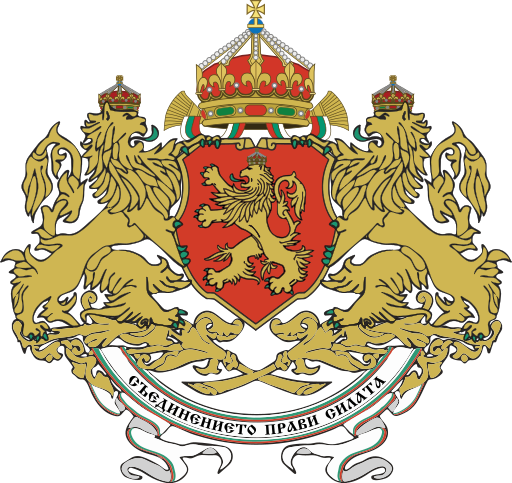

Добри дошли в нашия сайт за монарсите на Третото Българско царство! Ще може да разгледате информация за тяхното управление и личен живот. Предоставили сме едни от забележителните им фотографии. Надяваме се да Ви е интересно!
Третата българска държава е термин в историческата наука, с който се отблеязва третият етап на българската държавност. Въпреки клаузите на Ньойския договор от 1919г., които препятстват нормалното възстановяване след Първата световна война, всички владетели, управляващи по това време са се стремели да възвърнат изгубените територии, да модернизират страната, както и имат големи заслуги в стопанския и културен напредък на изостаналата България.
